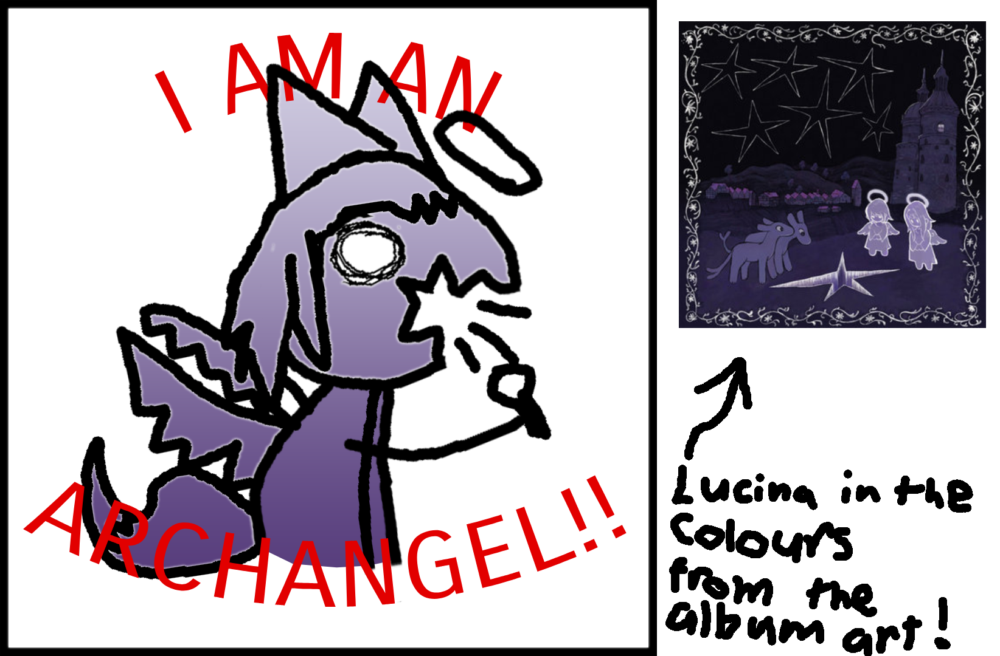
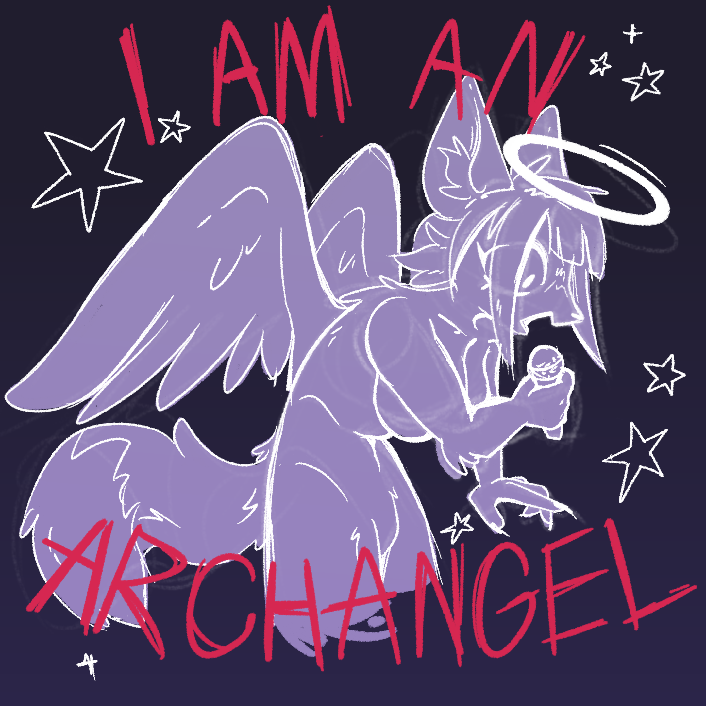

ImperfectChaos' very own slice of Web |
 |
|---|
BACK 2 UPLOADING
(10/05/26)
GUESS WHO FINALLY UPLOADED A NEW MAIN CHANNEL VIDEO!! THIS GIRL RIGHT HERE!!!! I DID I UPLOADED A CLIP DUMP AND IT'S NOT MY GREATEST WORK BUT IT'S PRETTY OKAY AND IT'S ME MAKING SOMETHING WHICH IS WHAT MATTERS!!!!!!
And look at that it's sitting in a pretty little container I AM ON A ROLL! If it wasn't clear by the fact I was able to actually make this video, I got OBS working again. (It was a very stupid mistake on my end but also sorta not really, had to do with the way KDE handles audio devices but I modified my autostart script to hopefully prevent that same issue from ever occuring again) Now that I'm uploading again it really feels like I'm BACK back, the stream I did was sorta a 1 off test but this is a real return with more to come!
It was also my birthday this month! I don't talk about my age online for some reason that even I don't really know why, it's funny that a lot of people have definitely thought I'm a 12 Year old for the past however many years because of it but it's whatever, kinda funny if anything. Didn't really get much outside of a bit of art from my artist friend who I'm not sure if I'm allowed to mention by name, and the traditional Sonic Lego set from my girlfriend, but the 2 of us spent like $50 each on Mann vs Machine tickets so maybe my gift is secretly an Australium Frontier Justice or something.
I've also continuing to chip away at the Canada move, which has ironically sent me to another Australian state. So I went to Sydney for the first time and had the honours of giving Mark Carney my fingerprints which was a 2 hour process to find the enterance to the right building, and the actual ordeal only took like 20 minutes so overall good usage of 3 days and $400! I did try to make the most of it though and payed visit to the Sydney Harbour Bridge and of course the Sydney Opera House just to say I did because people that you don't care about get irrationally angry that you don't spend any trip you take visiting every tourist attraction in a 40,000KM radius. Otherwise though it's done, just submit whatever I get out of this and wait. I've been enjoying putting images at the bottom of the Blog entries as well, so heres that art I got for my birthday along with the little doodle I made to express the idea, it's inspired by the song "why" on J from glass beach's new solo album.
 |
 |
Welcome to my little part of the Internet <3
.jpg)
Stay as long as you'd like.
There's plenty of room.
W.I.P.
This document was last modified: